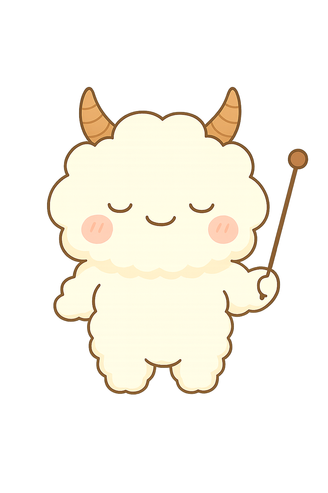

{% extends "base3.html" %}

{% block title %}
{% endblock %}


<div class="container">

    <div class="header">
        
        <p class="message">
            今日はたくさんの予定があります。<br>
            しっかりとがんばりましょう。
        </p>
    </div>

    <div class="date">
        <button class="arrow prev">◀</button>
        <button class="arrow next">▶</button>
    </div>

    <div class="progress-box">
        <div class="progress-title">
            <span>今日の達成度</span>
            <span class="percent"></span>
        </div>
        <div class="progress-bar">
            <div class="progress"></div>
        </div>
        <p class="progress-text"><span class="star">✦</span> あとつのタスクで目標達成です</p>
    </div>

    <button class="main-btn">タスク案を評価する</button>

    <div class="task-header">
        <h3>本日のタスク</h3>
        <a href="#">すべて見る ></a>
    </div>
    <div class="add">
      <button class="add-button">+</button>
    </div>

    <div id="task-list"></div>

</div>
<link rel="stylesheet" href="../../static/css/tsk.css">
<style>
.date{
  display: flex;
  align-items: center;
}
.header {
  display: flex;        
  align-items: center;  
  gap: 20px;            
  margin: 1.5em 0;
}

.message {
  position: relative;
  display: inline-block;
  padding: 10px 15px;
  min-width: 120px;
  max-width: 100%;
  color: #dda05f;
  font-size: 16px;
  background: #fffce7;
  border: solid 3px #f9dab5;
  border-radius: 8px;   
  box-sizing: border-box;
  margin: 0;             
}


.message:before {
  content: "";
  position: absolute;
  top: 50%;
  left: -22px;           
  margin-top: -12px;
  border: 12px solid transparent;
  border-right: 12px solid #fffce7;
  z-index: 2;
}

.message:after {
  content: "";
  position: absolute;
  top: 50%;
  left: -27px;
  margin-top: -14px;
  border: 14px solid transparent;
  border-right: 14px solid #f9dab5;
  z-index: 1;
}
button.arrow.prev {
  border: none;
  background: transparent;
  color: orange;
  font-size: 1.2em; /* 必要なら調整 */
  cursor: pointer;
  outline: none;
}

button.arrow.prev:focus {
  outline: none;
}
button.arrow.next {
  border: none;
  background: transparent;
  color: orange;
  font-size: 1.2em; /* 必要なら調整 */
  cursor: pointer;
  outline: none;
}

button.arrow.next:focus {
  outline: none;
}
.star {
  color: black;
}
.add-button {
  width: 40px;
  height: 40px;
  border-radius: 50%;
  border: none;
  background-color: #f19710;
  color: white;
  font-size: 50px;
  cursor: pointer;
   display: flex;
  justify-content: center;
  align-items: center;
  padding: 0;          
  line-height: 1;
}
.add-button:active {
  filter: brightness(0.7);
  transform: scale(0.95);
}
.task-header {
  display: flex;
  justify-content: space-between; /* 左右に配置 */
  align-items: center;            /* 縦中央揃え */
}

.task-header a {
  text-decoration: none;  /* 下線を消す */
  color: #f5b31b;
}
.progress-title{
  display: flex;
  color: #f5b31b;
}
.main-btn {
  background-color: #f19710;  /* オレンジ */
  color: white;               /* 文字白 */
  border: none;
  padding: 12px 24px;         /* 余白 */
  border-radius: 30px;        /* 丸み */
  font-size: 16px;
  cursor: pointer;
}
.add-button:active {
  filter: brightness(0.7);
  transform: scale(0.95);
}
</style>
{% block content %}
{% endblock %}
